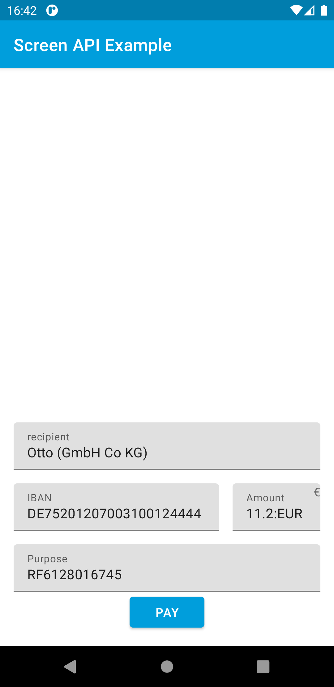

Testing¶
Requirements¶
Example banking app¶
To pass the requirements for the Gini Health SDK a supported banking app has to be installed on the device running your app.
TODO: use Gini Bank SDK urls after it’s released
An example banking app is available in the Gini Pay Bank SDK’s
repository called appscreenapi.
You can use the same Gini Pay API client credentials in the example banking app as in your app, if not otherwise specified.
Development Gini Pay API client credentials¶
In order to test using our example banking app you need to use development client credentials. This will make sure the Gini Health SDK uses a test payment provider which will open our example banking app.
End to end testing¶
After you’ve set the client credentials in the example banking app and installed it on your device you can run your app
and verify that GiniHealth.checkRequirements() returns an empty list.
Following the flow guide show the ReviewFragment after analyzing a document.
Check that the extractions and the document preview are shown and then press the Pay button:
{kind=link}
You should be redirected to the example banking app where the final extractions are shown:
{kind=link}
After you press the Pay button the Gini Pay Bank SDK resolves the payment and allows you to return to your app:
{kind=link}
With these steps completed you have verified that your app, the Gini Pay API, the Gini Health SDK and the Gini Pay Bank SDK work together correctly.
Testing in production¶
The steps are the same but instead of the development client credentials you will need to use production client credentials. This will make sure the Gini Health SDK receives real payment providers which open real banking apps.
You will also need to install a banking app which uses the Gini Pay Bank SDK. Please contact us in case you don’t know which banking app(s) to install.
TODO: update scheme once we updated it on the backend for the gini-mobile-test client id
Lastly make sure that for production you register the scheme we provided you for deep linking and you are not using ginipay-business://payment-requester.